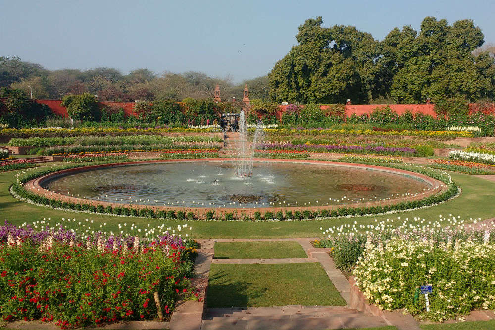

Mughal gardens are a type of gardens built by the Mughals. This style was influenced by the Persian gardens particularly the Charbagh structure, which is intended to create a representation of an earthly utopia in which humans co-exist in perfect harmony with all elements of nature Like Persian and Central Asian gardens, water became the central and connecting theme of the Mughal gardens. Water played an effective role in the Mughal gardens right from the time of Babur. He was more interested in ‘beauty’ than ‘ecclesiastical prescription. The beauty of Babur’s classic chaharbagh was the central watercourse and its flowing water. Most of these gardens were divided into four quadrants by two axis comprised with water channels and pathways to carry the water under gravitational pressure. At every intersecting point, there used to be a tank. In India, the early gardens were irrigated from the wells or tanks, but under the Mughals the construction of canals or the use of existing canals for the gardens provided more adequate and dependable water supply. Thus, the most important aspect of the waterworks of gardens was the permanent source of water supply. The hydraulic system needs enquiry about the ‘outside water source’ as well as ‘inside distribution of water’ in the paradisiacal Mughal gardens. The principal source of water to the Mughal gardens were: (i) lakes or tanks (ii) wells or step-wells (iii) canals, harnessed from the rivers, and (iv) natural springs.
